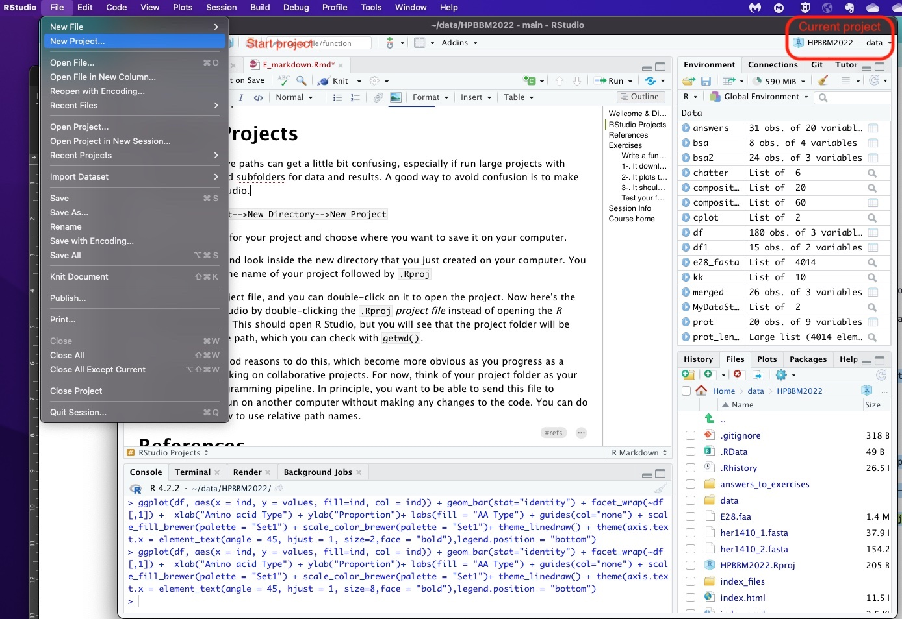
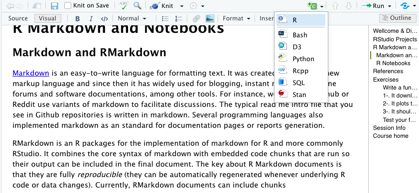
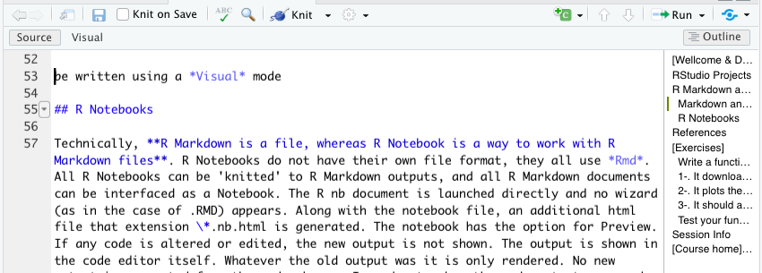
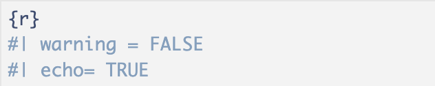
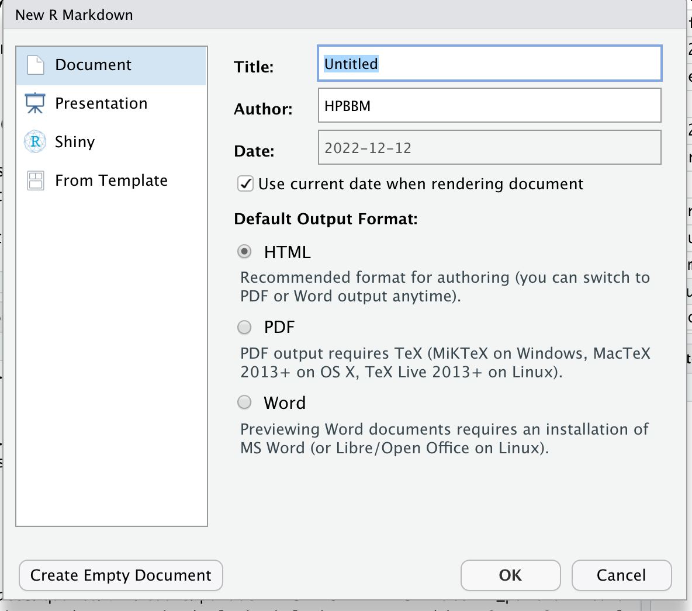
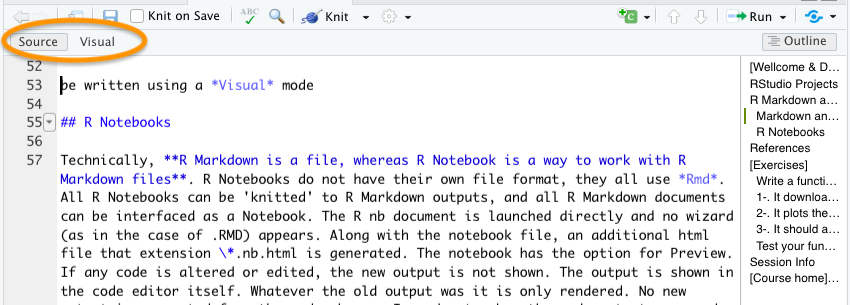

{r, label='my-first-chunk'}R7: Project management for reproducible research in R
R Markdown
R Notebook
R projects
Reproducibility
Git
Version control
Quarto
Positron
1 RStudio Projects
Working with relative paths can get a little bit confusing, especially if run large projects with different folders and subfolders for data and results. A good way to avoid confusion is to make an R project in R Studio.

As you can see in the screenshot above you can easily start a new project in RStudio using the File menu. Then, just select a name and save it on your computer (it will be have the extension Rproj).
Now here’s the cool part: When you open your project, you will see that the project folder will be your default relative path, which you can check with getwd(). Also, in the top-right corner of Rstudio you can see the project name and the containing folder.
Working with projects come along with other extra features. For instance, every time you open the project, the .Rdata and the .Rhistory are loaded; thus previously edited source documents and RStudio settings (e.g. active tabs, splitter positions, etc.) are restored. This will make a difference if you manage different projects at the same time.
There are more reasons to do this, which become more obvious as you progress as a coder and start working on collaborative projects. You can also create your project using a version control (Git or Subversion) repository. Version control helps software teams manage changes to source code over time. Version control software keeps track of every modification to the code in a special kind of database. If a mistake is made, developers can turn back the clock and compare earlier versions of the code to help fix the mistake while minimizing disruption to all team members. Version control systems have been around for a long time but continue to increase in popularity with data science workflows.
2 R Markdown and Notebooks
2.1 Markdown and RMarkdown
Markdown is an easy-to-write language for formatting text. It was created in 2004 as a new markup language and since then it has widely used for blogging, instant messaging, online forums and software documentations, among other tools. For instance, websites like Github or Reddit use variants of markdown to facilitate discussions. The typical read me intro file that you see in Github repositories is written in markdown. Several programming languages also implemented markdown as an standard for documentation pages or reports generation.
RMarkdown is an R packages for the implementation of markdown for R and more commonly RStudio. It combines the core simple syntax of markdown with embedded code chunks that are run so their output can be included in the final document. The key about R Markdown documents is that they are fully reproducible (they can be automatically regenerated whenever underlying R code or data changes).
Currently, RMarkdown documents can include chunks in different languages (see the screenshot below), so you can combine in the same document bash or Python scripts along with the R data analysis. Moreover, despite simplicity of its syntax it can include diverse formatting options, spanning enriched text to HTML or Latex contents as well.

Also, they can be written using a Visual mode (above) that looks like any other word processor, but you can switch to Source anytime.

I found two main advantages in using RMarkdown documents for my data analysis. Initially, I started to use it in order to generate formatted reports including all the information about the project in a paper-like format, from the background to the data analysis and the conclusions. Indeed, those “reports” can be as fancy as you wish, from html or latex-formatted pdf, to MS Word or even presentations. A second benefit of the use of markdown is that it facilitates your own work a lot, specially when you work in several different projects or you if you need to do some analysis after some time. Additionally, you can use Rmarkdown documents for web applications based in R using Shiny.
Moreover, there are a number of specialized sites to publish your Rmarkdown documents, such as Rpubs, bookdown.org or RStudio connect.
You can insert a chunk by writing the header ```{r} and foot ``` if you work in the Source mode or with green +C button in the Visual mode. See the example below.
Code in the chunks can be executed line-by-line using Ctrl+ENTER (Cmd+Enter in MacOS) or as a whole chunk using the play button on the top-right corner. Also, chunk output can be customized with some options (see Ref. 11) that allow you to choose whether a particular chunk will be executed or not or include invisible chunks that will not be shown in the final knitted doc… Some examples are (note that boolean properties are True by default):
include = FALSEprevents code and results from appearing in the finished file. R Markdown still runs the code in the chunk, and the results can be used by other chunks.echo = FALSEprevents code, but not the results from appearing in the finished file. This is a useful way to embed figures.message = FALSEprevents messages that are generated by code from appearing in the finished file.warning = FALSEprevents warnings that are generated by code from appearing in the finished.fig.cap = "..."adds a caption to graphical results.label = " "set a name or label specific to that chunk
Chunk options arguments can be set in the {} of a chunk header. Alternatively, you can write chunk options in the body of a code chunk after #|, e.g.,

Further customization options in R Markdown can be found in the references listed below. I especially recommend references 5 and 6 to start customizing your HTML Markdown documents, including different section headers, a table of contents (TOC), or even a personalized color scheme.
Quick exercise: Create your first R Markdown document
As with any other language, it is much easier to learn the syntax if you do some examples. We can turn one of our exercises into a Markdown HTML document in just a few steps:

Start a new R Markdown document. Initially, you will be asked for a title, an author and a date. You can also specify the type of output document here. This data will be included in the header of your rmd document (orange square in the figure below), a configuration section in YAML format that can be edited at any time. This section contains all the doc information, including about the title, the use of a TOC (Table of Contents), authoring, section numbering, html themes…

Once you have your new document, it includes some standard instructions for writing and creating coding chunks. You can switch back and forth between the
SourceandVisualformats to see the difference as in the pic above, and then replace the instructions with text like the exercise text.Insert a script from the exercises in the previous lessons into a chunk and try it. You can also split the script into multiple chunks and sprinkle in some explanations.
Add a final chunk with the
sessionInfo()to facilitate reproducibility.Knit it! You can try knitting into html, pdf or word document.
Knitting PDFs
Note that knitting into pdf may require the installation of a LaTeX distribution or R package. There are several alternatives, like tinytex, MacTeX or MikTeX, among others (see references 10 and 11).
If you struggle to adjust the chunks text width to in the PDF document, you may install the package formatR, as explained in the following StackOverflow answer: https://stackoverflow.com/questions/33481271/how-to-wrap-code-and-the-output-in-markdown-rmd
2.2 R Notebooks
Technically, R Markdown is a file format, while R Notebook is a way of working with R Markdown files. R Notebooks do not have a separate file format—they all use .Rmd files. Any R Markdown document can be opened as a Notebook, and any Notebook can be rendered (knitted) into standard R Markdown output. When launching an R Notebook, no setup wizard appears (as may happen with some .Rmd files). Alongside the main file, an additional HTML file with the extension .nb.html is generated, which allows for previewing the notebook. If code is modified, the output does not update automatically; instead, the previous output remains visible until the code chunk is re-executed. To view updated results, you must manually run the chunk. The YAML header for an R Notebook typically includes:
output: html_notebookWriting an R Notebook is essentially the same as writing an R Markdown document. The syntax for text and code chunks is identical. The key difference lies in interactivity: in R Markdown, all code is sent to the console at once during knitting, whereas in R Notebooks, code is executed line by line. This allows execution to stop immediately if an error occurs, making debugging easier.
3 Quarto
In 2022, RStudio launched Quarto, a novel markdown flavor, based in Pandoc, a free-software document converter, that expanded the possibilities of RMarkdown with new format options and enriched templates. See some examples here.
Working with quarto is almost identical as writing a markdown document, but it is particularly designed to generate complex documents, like a whole website or books. With Quarto it is easier to handle complex projects, include references or work collaboratively. Each document is generated in a .qmd file and the site/book options are defined in a companion YAML document that includes the site/book structure, metadata and other configuration. You can check the Quarto Reference to learn how to configure your yml file. As an example, have a look to the quarto documents of and the _quarto.yml file for this site in the github repository.
Besides the references below, I suggest you to check these examples and the this video about the use of Quarto to create amazing websites, books and interactive sites.
More recently, in 2024, Posit launched Positron, a new integrated development environment (IDE) designed for seamless use with both Python and R. In Positron, you can work either with R Markdown, Quarto, or Jupyter Notebooks to create reproducible analyses and data presentations. Although we have only tested it preliminary (you can ask Eduardo), Positron appears to be a promising tool that is likely to gain popularity and evolve significantly in the coming years.
5 Session Info
sessionInfo()R version 4.4.1 (2024-06-14)
Platform: x86_64-apple-darwin20
Running under: macOS Sonoma 14.6.1
Matrix products: default
BLAS: /Library/Frameworks/R.framework/Versions/4.4-x86_64/Resources/lib/libRblas.0.dylib
LAPACK: /Library/Frameworks/R.framework/Versions/4.4-x86_64/Resources/lib/libRlapack.dylib; LAPACK version 3.12.0
locale:
[1] en_US.UTF-8/en_US.UTF-8/en_US.UTF-8/C/en_US.UTF-8/en_US.UTF-8
time zone: Europe/Madrid
tzcode source: internal
attached base packages:
[1] stats graphics grDevices utils datasets methods base
other attached packages:
[1] formatR_1.14 knitr_1.50
loaded via a namespace (and not attached):
[1] htmlwidgets_1.6.4 compiler_4.4.1 fastmap_1.2.0 cli_3.6.4
[5] tools_4.4.1 htmltools_0.5.8.1 rstudioapi_0.17.1 yaml_2.3.10
[9] rmarkdown_2.29 jsonlite_2.0.0 xfun_0.51 digest_0.6.37
[13] rlang_1.1.5 evaluate_1.0.3 References
4 References
R Crash Course for Biologist. Robert I. Coulatti. November 2022 (GitHub repository https://github.com/ColauttiLab/RCrashCourse_Book).
RStudio Projects: https://support.posit.co/hc/en-us/articles/200526207-Using-RStudio-Projects
Higgins, P. D. R. Reproducible Medical Research with R.
Version control in R (Spanish):
R Markdown Cheat Sheet: https://www.rstudio.com/wp-content/uploads/2015/02/rmarkdown-cheatsheet.pdf
Formatting HTML documents with RMarkdown: https://bookdown.org/yihui/rmarkdown/html-document.html
r-cubed: Reproducible Research in R: https://jose.theoj.org/papers/10.21105/jose.00122
Create interactive documents with Quarto: https://appsilon.com/r-quarto-tutorial/
Create PDF reports with R Markdown: https://medium.com/@sorenlind/create-pdf-reports-using-r-r-markdown-latex-and-knitr-on-windows-10-952b0c48bfa9
R Markdown and Tinytex installation: https://bookdown.org/yihui/rmarkdown/installation.html
R Markdown chunk options: https://rpubs.com/Lingling912/870659
Quarto Reference Guide: https://quarto.org/docs/guide/
How to interactive websites with Quarto: https://www.r-bloggers.com/2022/07/r-quarto-tutorial-how-to-create-interactive-markdown-documents/
From RStudio to Positron: https://kphahn57.medium.com/from-rstudio-to-positron-707d3f6d2776